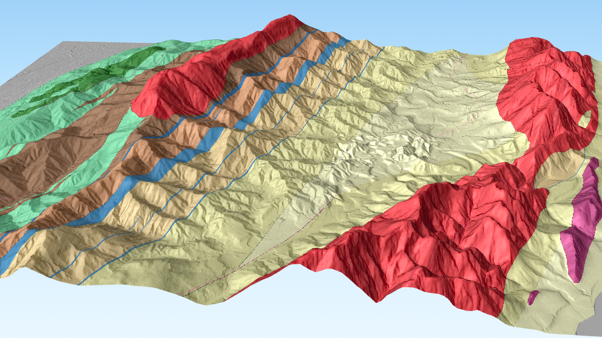
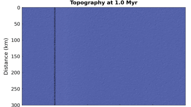

Subsurface logs and stratigraphic correlation
Pairwise correlation of cores and well logs, and basin-scale preparation of log data.

Interests and projects
I study the intricate interplay between near-surface processes, which shape the Earth’s topography. These processes are tightly associated with tectonic activity, climate forces, and sediment redistribution over time and space. A significant amount of my time was dedicated to studying the genesis of the Coastal Range of eastern Taiwan, from a subsiding syn-orogenic deep-marine sedimentary basin to a rapidly rising and eroding mountain. The results provide a foundation for investigating the history of syn-orogenic basin evolution, crustal mixing, and ancient topographic growth associated with regional tectonic activities. I have also been involved in multiple projects in Taiwan, the Northwest Pacific of the United States, and New Zealand, investigating sediment-related river incision processes, the origin of landslides, and the interactions and feedbacks among topographic evolution, climate change, and tectonic activities.


Pairwise correlation of cores and well logs, and basin-scale preparation of log data.
Multiscale topographic complexity and valley width from digital elevation data.

Studying the development of sedimentary basins, the origin of mélange, and inferred crustal deformation history at the active collisional suture zone of eastern Taiwan.

Studying how variabilities in substrate lithology and sediment govern the bedrock river channel slope and morphology in rapidly eroding and uplifting (>1 mm/yr) landslide-prone terrains.

Linking geomorphic signals to stratigraphic archives by comparing source-to-sink numerical simulation and real-world source-mountain surface data and deep-time sedimentary basin rock records.
Studying deep-seated landslides with regard to their spatio-temporal patterns, natural controls and triggers, and long-term effects on topographic evolution.

Adapting a modern data-science approach to enhance objectivity and reproducibility in stratigraphic research, including new methods for automated correlation, facies classification, and sedimentological signal processing.

Investigating sedimentologic and morphologic characteristics of gravel-rich beaches to understand coastal processes that cause shoreline changes and sediment mobilization. Details to be updated.